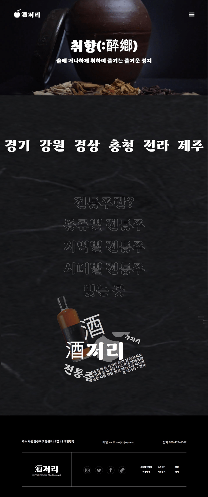
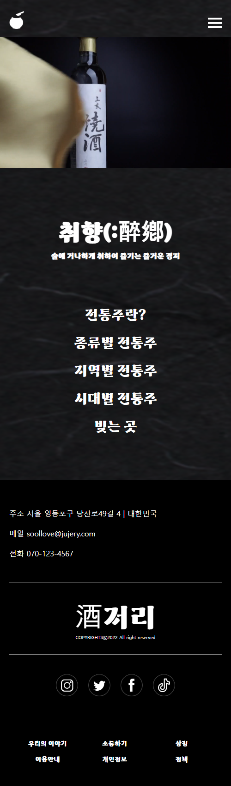
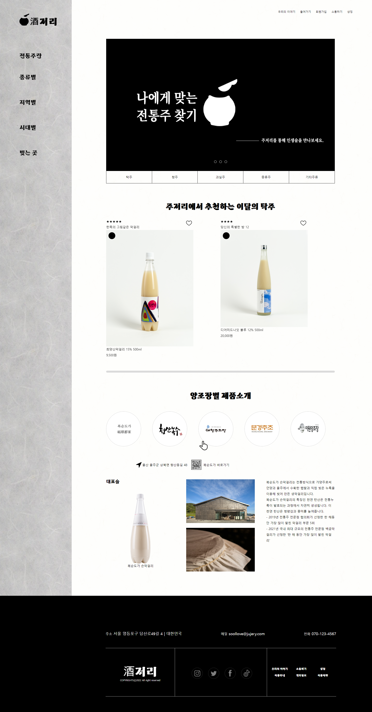
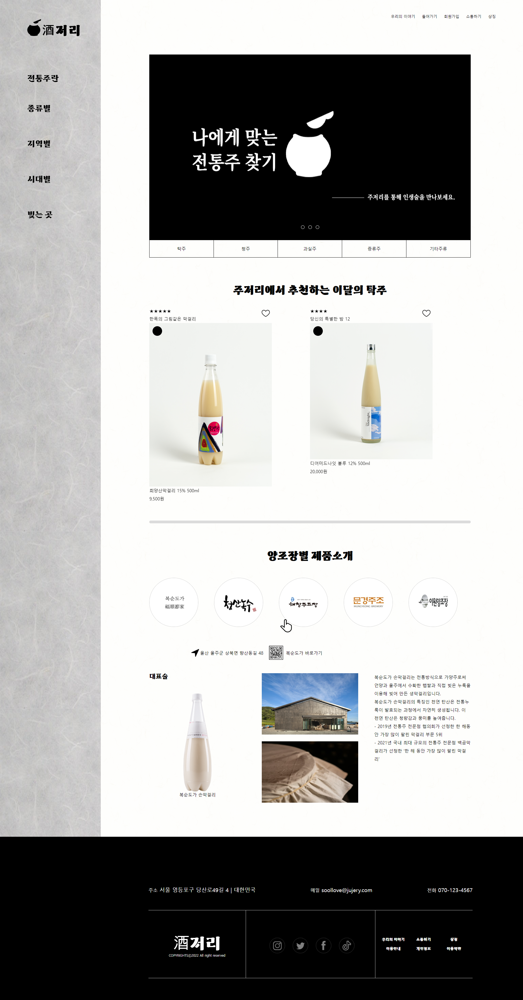

DESIGN PROCESS
01. DESIGN PROCESS
Grid System
Full width : 1920px
Grid width : 1180px
Column width: 80px
Gutter width: 20px
Number of columns: 12
Concept
코로나바이러스 감염증(코로나19) 장기화에 홀로 즐기는 '혼술'이나 집에서 마시는 '홈술' 문화, MZ세대의 과시형 소비 '플랙스' 문화가 뜨는 가운데 프리미엄 전통주가 '힙한 술'로 각인되면서 전통주의 수요가 급등하였습니다. 전통주에 대한 궁금증 해소와 흥미를 높이기 위해 우리나라 전통주의 역사, 현재를 공유하는 페이지를 디자인 하였습니다.
Color System
우리나라 종이 한지는 천년의 세월을 간직한 우리 고유의 종이입니다. 오랜 역사를 간직한 전통주를 한지 질감과 함께 표현해 보았습니다. 전체적으로 전통주 느낌을 잘 살리기 위하여 배경으로 아이보리색상의 한지를, 서브컬러로는 검은 한지를 사용해 군더더기 없는 단정하고 깔끔한 느낌을 주었습니다.
Typograpy
Main상주경천섬체
Regular
: 붓글씨의 형태를 따른 구조의 상주경천섬체를 사용합니다.
SubNoto Serif KR
Regular
: 깔끔하고 가독성이 좋은 Noto serif KR을 사용합니다.
Logo
주저리의 심볼마크를 표현하였습니다.
주저리의 로고는 술 항아리와 표주박을 사용해 브랜드의 핵심가치를 직관적으로 전달합니다.
MAIN PAGE
02. MAIN PAGE
- Header
- Contents
- Footer
- 페이지 접속 시 가장 처음 보게 되는 영역에
전통주와 관련된 영상을 삽입하여 시선을 집중시켰습니다.
또한 스크롤시 각 영역이 화면 전체를 차지하게 하여 영역들의
화면 사용 범위를 넓혀 큼직하고 시원한 느낌을 줬습니다.
- 이미지 자료와 애니메이션 효과 등을 적극활용해서
페이지에 대해 탐색하고 싶은 생각을 들게 하고자 했으며
바로 상세페이지로 접속할 수 있도록 메뉴 아이콘 클릭 없이
상세페이지로 이동이 가능한 영역을 메인의 한 영역으로 배치했습니다.
PC
MOBILE
SUB PAGE
03. SUB PAGE
- 사용자가 불편하지 않을 수 있도록 종류별 메인 페이지 요소를 클릭하면 그 구성 페이지로 넘어가도록 하여 페이지 이동의 연속성이 끊기지 않도록 하였습니다.또한 너무 정적이지 않게 스크롤 할 때 애니메이션 효과를 나타나게 하였습니다.
 
